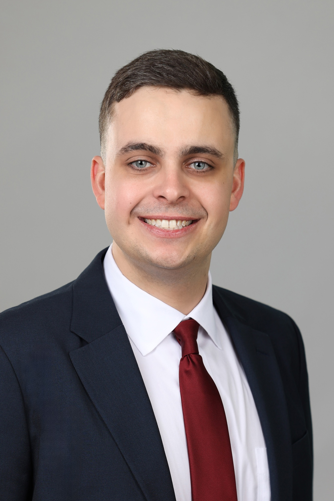

MD Candidate | Emergency Medicine
📍 Chesapeake, Virginia
Passionate about working with the Latino community and using Spanish language skills to cross cultural barriers in healthcare.
Building trust and understanding through language creates better patient outcomes and more compassionate care.
Delivering a diagnosis of likely terminal cancer to an elderly patient in the Emergency Department, only to be interrupted by a sudden, unexpected cardiac arrest in the next room. This moment crystallized the intensity, unpredictability, and profound responsibility that defines emergency medicine.
I love the acuity of Emergency Medicine and the fact that we often can provide high-yield solutions when patients need them most. What truly drives me is treating the undifferentiated patient—this fundamental "doctoring" is what brought me to medical school in the first place.
There's something profound about meeting patients at their most vulnerable moments and working through the diagnostic process to provide answers, relief, and life-saving interventions. Emergency medicine represents the intersection of rapid decision-making, broad medical knowledge, and human connection under pressure.